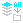

EXPORT
Export PNG&PSD
Export PNG&PSD
AppIcon Generate
ExportAll LayersToPNG

Export AllLayersToPNG FromAllPSD
SaveForWeb JPG
SaveForWeb PNG
IMPORT
ImportAll PSD
64
ImportAll PSD
128
ImportAll PSD
256
ImportAll PSD
512
LAYERS RENAME
Prefix
AddNum
ReverseNum
Sufix
Rename
Replace
Remove
ETC
CreatePSD ForAppIcon
Sort AllLayers
Sort SelectedLayers
ClearHiddenFXs SelectedLayers
PSD Cleaner
PNG SlicePatch
GUIDE
CreateGuide VerticalCenter
CreateGuide HorizontalCenter